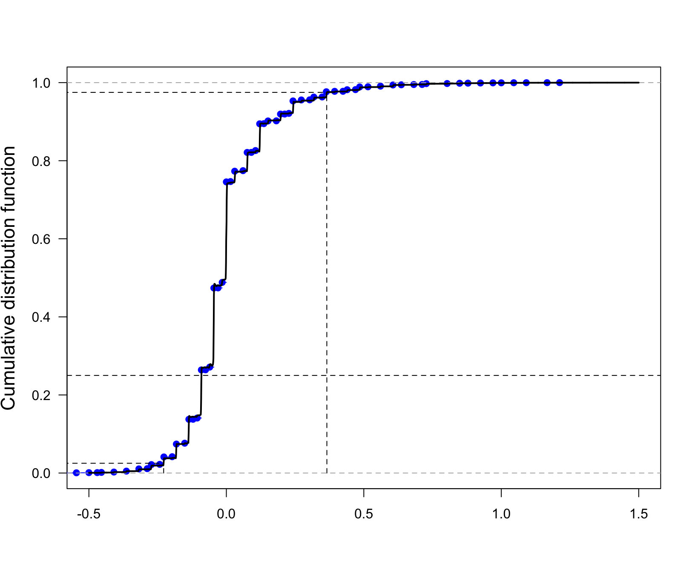
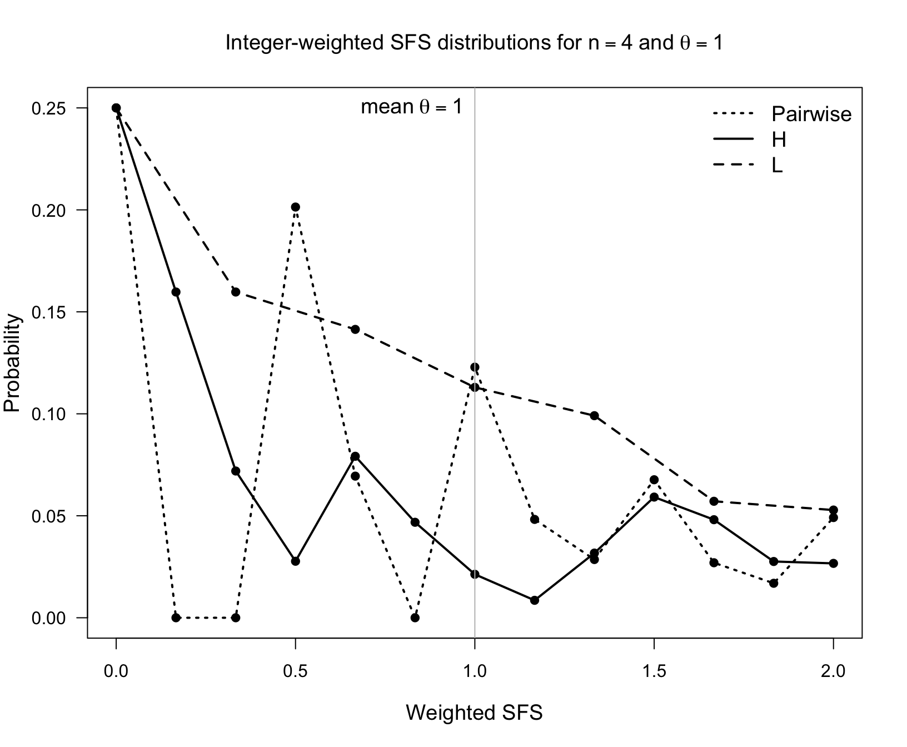
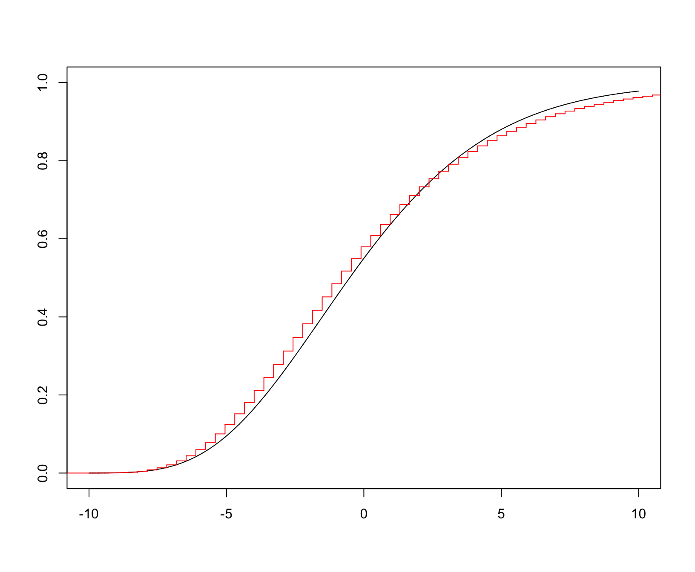

Using PhaseTypeR for the site frequency spectrum - Figures
Source:vignettes/phasty_SFS_Figures.Rmd
phasty_SFS_Figures.Rmd1. Introduction
TODO: Check final references to paper.
Here we recreate the figures from the paper and give more example of how to use the phase-type representation of the block counting process.
1. Figure 1
Consider first, the left figure of Figure 1. This displays the coefficients of for the site frequency spectrum for different unbiased estimators of the mutation rate \(\theta\). The coefficients of the H, L, Wattersons, pairwise and singleton estimators are given Section 1.1 of Asger (2020). The coefficients of the BLUE estimator are given by \[\begin{eqnarray} \hat{\bc}= \frac{\bLambda^{-1}\bv}{\bv^{\ast}\;\bLambda^{-1}\bv}. \end{eqnarray}\] where \(\bLambda\) is the covariance matrix of the site frequency spectrum, which, using formula XX in Asger (2020) can be calculated in terms of the mean and covariance matrix of the underlying block counting process \[\begin{align} \Var \bZ = \lambda^2 \bSigma + \lambda \diag(\bmu) \end{align}\] The latter two are easily calculated:
n = 10
ph_bcp = block_counting_process(n)
bmu = mean(ph_bcp)
bSigma = var(ph_bcp)Using these two quantities, the coefficients are calculated below.
thetaVec <- c(0.1,1,5,10,100)
bv = 1/(1:(n-1))
##BLUE Estimators
coef_matrix = matrix(0,length(thetaVec),n-1)
for(i in 1:length(thetaVec)) {
theta = thetaVec[i]
bLambda=(theta/2)^2*bSigma + (theta/2)*diag( bmu )
coef_matrix[i,]=solve(bLambda)%*%bv/c(bv%*%solve(bLambda)%*%bv)
}
## Wattersons estimator
xWatt <- rep(1,length(bv))/sum(bv)
##-------------------------------------------------------------
## Singleton estimator
xsngltns <- c(1,rep(0,(length(bv)-1)))
##-------------------------------------------------------------
## Pairwise difference estimator
xpair <- ( 1:(n-1) )*( (n-1):1 )/n/(n-1)*2
##-------------------------------------------------------------
## H estimator
xH <- ( 1:(n-1) )^2 *2/n/(n-1)
##-------------------------------------------------------------
## L estimator
xL <- ( 1:(n-1) )/(n-1)
##---------------------------------------------------------------
## Plot the coefficients of the 5 different estimators (W,S,P,H,L)
plot(1:(n-1),xWatt,ylim=c(-0.5,2),col="black",lwd=2,type="l",xlim=c(1,n),
xlab=bquote(i),ylab=bquote(c[i]),cex.lab=1.4,lty=2,las=1)
abline(v=1:9,col="gray")
points(1:(n-1),xsngltns,col="black",type="l",lty=3,lwd=2)
points(1:(n-1),xpair,col="black",type="l",lty=4,lwd=2)
points(1:(n-1),xH,col="black",type="l",lty=5,lwd=2)
points(1:(n-1),xL,col="black",type="l",lty=6,lwd=2)
for (i in 1:length(thetaVec)){
xhat = coef_matrix[i,]
points(1:(n-1),xhat,type="l",lwd=2)
text(n-1,xhat[n-1],bquote(theta==.(thetaVec[i])),pos=4)
}
txtVec <- c("Watterson","Singleton","Pairwise","H","L","BLUE")
ltyVec <- c(2,3,4,5,6,1)
indx <- c(4,5,1,3,2,6)
legend(2,2,txtVec[indx],lty=ltyVec[indx],lwd=2,bty="n",cex=1.2)
The right figure in Figure 1 displays the variances as a function of \(\theta\) - these can be calculated as \(\bc^\ast \bLambda \bc\), where \(\bc\) are the coefficients calculated above, and \(\bLambda\) is the covariance of the site frequency spectrum as above.
thetaVec <- seq(0.01,2.5,by=0.1)
ntheta <- length(thetaVec)
vrW <- rep(0,ntheta) ; vrS <- rep(0,ntheta) ; vrP <- rep(0,ntheta)
vrH <- rep(0,ntheta) ; vrL <- rep(0,ntheta) ; vrMVUE <- rep(0,ntheta)
for (i in 1:ntheta){
tht <- thetaVec[i]
bLambda=(tht^2/4)*bSigma + (tht/2)*diag( bmu )
xhat <- (solve(bLambda) %*% bv)/as.numeric(bv %*% solve(bLambda) %*% bv)
vrMVUE[i] <- t(xhat) %*% bLambda %*% xhat
vrW[i] <- t(xWatt) %*% bLambda %*% xWatt
vrS[i] <- t(xsngltns) %*% bLambda %*% xsngltns
vrP[i] <- t(xpair) %*% bLambda %*% xpair
vrH[i] <- t(xH) %*% bLambda %*% xH
vrL[i] <- t(xL) %*% bLambda %*% xL
}
plot(thetaVec,vrMVUE,type="l",lty=1,lwd=2,xlim=c(0,max(thetaVec)),
xlab=bquote(theta),ylab="Variance for estimator",cex.lab=1.4,las=1)
points(thetaVec,vrW,type="l",lty=2,lwd=2)
points(thetaVec,vrS,type="l",lty=3,lwd=2)
points(thetaVec,vrP,type="l",lty=4,lwd=2)
points(thetaVec,vrH,type="l",lty=5,lwd=2)
points(thetaVec,vrL,type="l",lty=6,lwd=2)
indx <- c(4,5,2,3,1,6)
legend("topleft",txtVec[indx],lty=ltyVec[indx],lwd=2,bty="n",cex=1.2)Simulation and characteristic function
Here, we numerically invert the characteristic function of the numerator of Tajima’s \(D\) and compare to simulated values. First, we obtain the rate-matrix and state space for the block counting process. First, we simulate using the results in XX Asger (2020), from which it follows that the site frequency spectrum can be simulated by first sampling a random variate from the appropriate block counting process, and letting the entries of this variate be the rates of independent Poisson random variables. First, we obtain the block counting process for \(n=4\)
n = 4
# create rate-matrix and state space for block counting process
ph_bcp = block_counting_process(n)
#> Warning in phase_type(subintensity_matrix): The initial probability vector is automatically generated.
#> Warning in phase_type(subintensity_matrix, reward_mat = rew_mat): The initial probability vector is automatically generated.
# Obtain subintensity matrix
subintensity_matrix = ph_bcp$subint_mat
rew_mat = ph_bcp$reward_matNext, we simulate random site frequency spectra by using REF.
R = 1e4
ph_mv_sim_obj = sim_rew_phase_type(R,ph_bcp)
lambda = 0.5 #lambda = theta/2
ph_counts = matrix(0,dim(ph_mv_sim_obj)[2],dim(ph_mv_sim_obj)[1])
for(i in 1:R) {
ph_counts[i,] = rpois(n-1,lambda*ph_mv_sim_obj[,i])
}The numerator of Tajima’s \(D\) is \(\hat{\theta}_{\pi}-\hat{\theta}_{\rm W}\) so the coefficient vector \(\mathbf{c}\) is \[ c_i = \frac{1}{\binom{n}{2}} i (n-i) - \frac{1}{\sum_{i=1}^{n-1} \frac{1}{i}} \]
which is implemented below
bc = (2*((1:(n-1))*( (n-1):1))/(n*(n-1)) - 1/sum(1/(1:(n-1))))For numeric reasons, we scale the coefficients by 1000 and rescale later
res = 1000
bc = res*bcAccording to REF, the characteristic function is obtained as
\[ \phi(t) = G(\e^{\ih t}) \]
where \[\begin{align*} G(z) = \Exp [z^{\bc^\ast \bxi}] = \Exp [z^{c_1 \xi_1} z^{c_2 \xi_2} \dots z^{c_{n-1} \xi_{n-1}}] = \be_1^\ast \left( \lambda \Delta[\bA (z^\bc - \be)] +\bT \right)^{-1} \bT \be = \be_1^\ast \left( \bS + \lambda \Delta[\bA (z^\bc] \right)^{-1} \bT \be \end{align*}\] where \(\bT,\bA\) being respectively the subintensity matrix and reward matrix of the block counting process, \(\bone = (1,1,\dots,1)^\ast\) and \(\bS = \bT - \lambda \Delta \bA - \be\).
The next snippet implements the \(\phi\)-function
themean = sum(mean(ph_bcp)*bc) #the mean of the linear combination (should be 0)
bT = subintensity_matrix #bold T
bA = rew_mat #bold A
bS = bT - lambda*diag(rowSums(bA)) #bold S
bone = matrix(1,dim(bT)[1],1) #bold one = (1,1,...,1)^T
balpha = matrix(0,1,dim(bT)[1]);balpha[1]=1 #(1,0,...,0)
phi <- function(t) (exp(-1i*themean*t))*balpha%*%solve(bS+lambda*diag(c(bA%*%(exp(1i*t)^bc))) )%*%bT%*%boneFinally, we approximate the CDF and rescale
appvals=ApproxCDF(phi,H = 1e5,eta=0.0001,xlim=c(-0.5*res,1.5*res),smoothe=TRUE)
xvals=appvals[[1]]
yvals=appvals[[2]]
bc2 = (1/res)*bc
xvals2 = (1/res)*xvals
themean2 = (1/res)*themean
centered_sim2 = ph_counts%*%bc2-c(themean2)
ecdfobj2 = ecdf(centered_sim2)
plot(xvals2,yvals,type="l",ylim=c(0,1),xlab="",las=1,ylab="Cumulative distribution function",cex.lab=1.4)
lines(ecdfobj2,col="blue")
lines(xvals2,yvals,lwd=2)
segments(-1, 0.025, x1 = xvals2[min(which(0.025<yvals))], y1 = 0.025,lty = 2)
segments(xvals2[min(which(0.025<yvals))], 0, x1 = xvals2[min(which(0.025<yvals))], y1 = 0.025,lty = 2)
segments(-1, 0.975, x1 = xvals2[max(which(0.975>yvals))], y1 = 0.975,lty = 2)
segments(xvals2[min(which(0.975<yvals))], 0, x1 = xvals2[max(which(0.975>yvals))], y1 = 0.975,lty = 2)
#abline(h = 0.025,lty=3)
#abline(h = 0.975,lty=3)
#abline(v=xvals2[min(which(0.025<yvals))],lty=2)
#abline(v=xvals2[max(which(0.975>yvals))],lty=2)
xvals2[min(which(0.025<yvals))]
#> [1] -0.2280796
abline(h = 0.25,lty=2)
Next, we run the above code with \(n=8\).
#> Warning in phase_type(subintensity_matrix): The initial probability vector is automatically generated.
#> Warning in phase_type(subintensity_matrix, reward_mat = rew_mat): The initial probability vector is automatically generated.
Figure 4
In this section we recreate the bottom two sub-figures of Figure 4, and first we consider the bottom left figure, which displays the CDFs of the \(i\)-ton branch-length for \(i = 1,2,3,4\). As described in Section 3, these branch-lengths all have (possibly defective) \(PH\) distributions, whose subintensity matrix (and possible defect) can be calculated from the subintensity matrix and state-space of the block-counting process, so first compute these two objects:
n = 5
ph_bcp = block_counting_process(n)
#> Warning in phase_type(subintensity_matrix): The initial probability vector is automatically generated.
#> Warning in phase_type(subintensity_matrix, reward_mat = rew_mat): The initial probability vector is automatically generated.
subintensity_matrix = ph_bcp$subint_mat
rew_mat = ph_bcp$reward_matThe reward matrix (which also represents the state-space of the block-counting process) is
rew_mat
#> [,1] [,2] [,3] [,4]
#> [1,] 5 0 0 0
#> [2,] 3 1 0 0
#> [3,] 2 0 1 0
#> [4,] 1 2 0 0
#> [5,] 1 0 0 1
#> [6,] 0 1 1 0As we see, the first column of the state-space matrix, \(\br = (5,3,2,1,1,0)^\ast\), then corresponds to the rewards which give rise to the singleton branch-lengths, which can then be generated as
ph = phase_type(subintensity_matrix)
#> Warning in phase_type(subintensity_matrix): The initial probability vector is automatically generated.
ph_rew_obj=reward_phase_type(ph, rew_mat[,1])The code below generates the phase type distribution of the \(i\)-ton branches and their CDFs using the formula (TODO: REF)
\[ 1 - F(t)= \Prob (\tau>t) = 1- \balpha e^{\bS t}\bone, \] The code below plots the four distributions functions:
plot(1, type="n",xlim=c(0,4),ylim=c(0,1),
xlab="t",ylab="Cumulative distribution function",cex.lab=1.4,
main="Branch length distributions for i-tons with sample size n=5",las=1)
for(i in 1:(n-1)) {
ph_rew_obj=reward_phase_type(ph, rew_mat[,i])
bone = matrix(1,length(ph_rew_obj$init_probs),1)
abstime <- function(u) {
1 - ph_rew_obj$init_probs%*%expm(ph_rew_obj$subint_mat*u)%*%bone
}
abstime = Vectorize(abstime)
curve(abstime,lty=i,add=TRUE,lwd=2)
}
legend("bottomright",c("singleton","doubleton","tripleton","quardrupleton"),
lty=1:4,bty="n",cex=1.3,lwd=2)
The the bottom right plot of Figure 4, we find the point probabilities of \(i\) mutations \(i=1,\dots,4\) corresponding to Phase-type distributions of the bottom left figure. These are easily computed using Theorem 2.3 which in this case has the interpretation, that adding mutations to branches whose length is \(PH\)-distributed, gives a \(DPH\) distribution, whose sub-transition matrix is given by
\[\begin{equation} \bM=\Big(\bI-\frac{2}{\theta} \bS\Big)^{-1}. \tag{$\spadesuit$} \end{equation}\]
where \(\bS\) is the sub-transition matrix of the underlying phase-type distribution.
plot(1, type="n", xlim=c(0, 4), ylim=c(0, 1),las=1,xlab="Number of mutations",ylab="Probability",
main="Probability of mutations for theta=1")
for(i in 1:(n-1)) {
ph_rew_obj=reward_phase_type(ph, rew_mat[,i])
bS = ph_rew_obj$subint_mat
bM = solve(diag(dim(bS)[1])-2*bS)
bpi = ph_rew_obj$init_probs
bone = matrix(1,diag(dim(bS)[1],1))
bm = bone - bM%*%bone
probs = apply(matrix(0:5),1,function(i) bpi%*%(bM%^%i)%*%bm)
probs[1] = probs[1] + ph_rew_obj$defect
points(0:5,probs,pch=16)
lines(0:5,probs,lty=i,lwd=2)
}
legend("topright",c("singleton","doubleton","tripleton","quardrupleton"),
lty=1:4,bty="n",cex=1.3,lwd=2)Figure 6
Figure 6 displays the point probabilities of the three integer–weighted estimators for \(\theta\) (\(\hat{\theta}_{\pi}, \hat{\theta}_H\) and \(\hat{\theta}_L\) for \(n=4\) and \(n=6\). First, we consider the left sub-figure, i.e. \(n=4\). The three estimators are all integer-weighted versions of the site frequency spectrum, i.e., of the form \(\ba^\ast \bxi = a_1 \xi_1 + a_2 \xi_2 + \dots + a_{n-1} \xi_{n-1}\), where the \(a_i\)s are integers. As described in section 4.1 of Hobolth (2020), these estimators have a \(DPH\) distribution, whose subtransition matrix is constructed using the entries of (\(\spadesuit\)), so we first, calculate the latter:
n = 4
theta = 1
ph_bcp = block_counting_process(n)
#> Warning in phase_type(subintensity_matrix): The initial probability vector is automatically generated.
#> Warning in phase_type(subintensity_matrix, reward_mat = rew_mat): The initial probability vector is automatically generated.
subintensity_matrix = ph_bcp$subint_mat
rew_mat = ph_bcp$reward_mat
ph = phase_type(subintensity_matrix)
#> Warning in phase_type(subintensity_matrix): The initial probability vector is automatically generated.
# The reward vector is the rows sums of the state space matrix
ph_rew_obj = reward_phase_type(ph, rowSums(rew_mat))
bS = ph_rew_obj$subint_mat
bM = solve(diag(dim(bS)[1])-(2/theta)*bS)Next, we define the three \(\ba\) vectors of coefficients. These are \((1,2,3)\) , \((3,4,3)\) and \((1,4,9)\) for \((\hat{\theta}_L)\),\((\hat{\theta}_{\pi})\) and \((\hat{\theta}_{H})\) respectively.
baMat = matrix(c(1:(n-1),(1:(n-1))*((n-1):1),(1:(n-1))^2),n-1,n-1,byrow=TRUE)
baMat
#> [,1] [,2] [,3]
#> [1,] 1 2 3
#> [2,] 3 4 3
#> [3,] 1 4 9Next, we proceed with the construction as described in section 4.1 of Asger (2020) (TODO and Chap XX)
len = n*(n-1)+1
probsMat = matrix(0,3,len)
for(i_outer in 1:3) {
ba = baMat[i_outer,] #This is the current a-vector
DPH_obj = DPHrep(bM,ph_bcp$reward_mat,ba)
bMt = DPH_obj[[1]]
sizes_of_blocks = DPH_obj[[2]]
balpha = rep(0,dim(bMt)[1])
balpha[sizes_of_blocks[1]] = 1
bone = matrix(rep(1,dim(bMt)[1]))
bmt = bone - bMt%*%bone
probs = rep(0,len)
for(i in 1:len) {
probs[i] = balpha%*%(bMt%^%(i-1))%*%bmt
}
probsMat[i_outer,] = probs
}
#Finally, plot the figures
main.txt <- bquote("Integer-weighted SFS distributions for n" == .(n)~"and"~theta==1)
xs = c(0,(1:(2*(n-1)))/(n-1))
plot(xs,probsMat[1,1:(2*(n-1)+1)],type="l",lty="dashed",pch=19,ylim=c(0,probsMat[1,1]),xlab="Weighted SFS",ylab="Probability",
main=main.txt,cex.main=1.2,cex.lab=1.2,las=1,lwd=2)
points(xs,probsMat[1,1:(2*(n-1)+1)],type="p",pch=19)
xs = c(0,(1:((n*(n-1))))/(n*(n-1)/2))
points(xs,probsMat[2,],type="l",lty="dotted",lwd=2)
points(xs,probsMat[2,],type="p",pch=19)
points(xs,probsMat[3,],type="l",lty="solid",lwd=2)
points(xs,probsMat[3,],type="p",pch=19)
abline(v=1,col="gray")
txt <- bquote("mean"~theta==1)
text(1,probsMat[1,1],txt,pos=2,cex=1.2)
legend("topright",c("Pairwise","H","L"),lwd=2,
lty=c("dotted","solid","dashed"),bty="n",cex=1.2)
The figure for \(n=6\) is created in a similar fashion
##### THE FOLLOWING CODE DOES NOT RUN FOR R-DEVEL #####
# n = 6
# theta = 1
# ph_bcp = block_counting_process(n)
#
# subintensity_matrix = ph_bcp$subint_mat
# rew_mat = ph_bcp$reward_mat
#
# ph = phase_type(subintensity_matrix)
#
# # The reward vector is the rows sums of the state space matrix
#
# ph_rew_obj = reward_phase_type(ph, rowSums(rew_mat))
# bS = ph_rew_obj$subint_mat
#
# bM = solve(diag(dim(bS)[1])-(2/theta)*bS)
#
# baMat = matrix(c(1:(n-1),(1:(n-1))*((n-1):1),(1:(n-1))^2),n-1,n-1,byrow=TRUE)
#
# len = n*(n-1)+1
# probsMat = matrix(0,3,len)
#
# for(i_outer in 1:3) {
# ba = baMat[i_outer,] #This is the current a-vector
# DPH_obj = DPHrep(bM,ph_bcp$reward_mat,ba)
# bMt = DPH_obj[[1]]
# sizes_of_blocks = DPH_obj[[2]]
# balpha = rep(0,dim(bMt)[1])
# balpha[sizes_of_blocks[1]] = 1
# bone = matrix(rep(1,dim(bMt)[1]))
# bmt = bone - bMt%*%bone
# probs = rep(0,len)
# for(i in 1:len) {
# probs[i] = balpha%*%(bMt%^%(i-1))%*%bmt
# }
# probsMat[i_outer,] = probs
# }
#
# xs = c(0,(1:(2*(n-1)))/(n-1))
#
# main.txt <- paste("Integer-weighted SFS distributions for n=",n,"and theta=",1)
#
#
# plot(xs,probsMat[1,1:(2*(n-1)+1)],type="l",lty="dashed",pch=19,ylim=c(0,probsMat[1,1]),xlab="Weighted SFS",ylab="Probability",
# main=main.txt,cex.main=1.2,cex.lab=1.2,las=1,lwd=2)
# points(xs,probsMat[1,1:(2*(n-1)+1)],type="p",pch=19)
#
# xs = c(0,(1:((n*(n-1))))/(n*(n-1)/2))
# points(xs,probsMat[2,],type="l",lty="dotted",lwd=2)
# points(xs,probsMat[2,],type="p",pch=19)
# points(xs,probsMat[3,],type="l",lty="solid",lwd=2)
# points(xs,probsMat[3,],type="p",pch=19)
#
#
# xs = c(0,(1:(2*(n-1)))/(n-1))
#
# abline(v=1,col="gray")
# txt <- paste("mean=theta=",1)
# text(1,probsMat[1,1],txt,pos=2,cex=1.2)
#
# legend("topright",c("Pairwise","H","L"),lwd=2,
# lty=c("dotted","solid","dashed"),bty="n",cex=1.2)Last Figure
Compute CDF from the first figure
n = 10
lambda = 0.5
ph_bcp = block_counting_process(n)
#> Warning in phase_type(subintensity_matrix): The initial probability vector is automatically generated.
#> Warning in phase_type(subintensity_matrix, reward_mat = rew_mat): The initial probability vector is automatically generated.
ph_mv_sim_obj = sim_rew_phase_type(R,ph_bcp)
ph_counts = matrix(0,dim(ph_mv_sim_obj)[2],dim(ph_mv_sim_obj)[1])
for(i in 1:R) {
ph_counts[i,] = rpois(n-1,lambda*ph_mv_sim_obj[,i])
}
# Obtain subintensity matrix
subintensity_matrix = ph_bcp$subint_mat
rew_mat = ph_bcp$reward_mat
#bc = xWatt
bc = coef_matrix[2,] #coef_matrix was generated above, its rows correspond to the entries of thetavec, second entry is theta = 1
res = 1000
bc = res*bc
#compute characteristic function
themean = lambda*sum(mean(ph_bcp)*bc) #the mean of the linear combination
bT = subintensity_matrix #bold T
bA = rew_mat #bold A
bS = bT - lambda*diag(rowSums(bA)) #bold S
bone = matrix(1,dim(bT)[1],1) #bold one = (1,1,...,1)^T
balpha = matrix(0,1,dim(bT)[1]);balpha[1]=1 #(1,0,...,0)
phi <- function(t) (exp(-1i*themean*t))*balpha%*%solve(bS+lambda*diag(c(bA%*%(exp(1i*t)^bc))) )%*%bT%*%bone
#Invert numerically
appvals=ApproxCDF(phi,H = 1e5,eta=0.0001,xlim=c(-1.5*res,4*res),smoothe=TRUE)
xvals=appvals[[1]]
yvals=appvals[[2]]
bc2 = (1/res)*bc
xvals2 = (1/res)*xvals
themean2 = (1/res)*themean
plot(xvals2,yvals,type="l",ylim=c(0,1),xlab="",ylab="")
#Compute point probabilities of Wattersons Theta
ph = phase_type(ph_bcp$subint_mat)
#> Warning in phase_type(ph_bcp$subint_mat): The initial probability vector is automatically generated.
watter=reward_phase_type(ph, rowSums(ph_bcp$reward_mat))
lambda = 0.5
bM = solve( diag(dim(watter$subint_mat)[1])-(1/lambda)*watter$subint_mat)
bm = rowSums(diag(dim(bM)[1]) - bM)
a1 = 1/sum(1/1:(n-1)) #"normalizing" constant, in Wattersons theta
len = 17 #number of points to include
out = rep(0,len)
for(i in 0:(len-1)) {
out[i+1] = ph$init_probs%*%(bM%^%i)%*%bm
}
wx=-1+a1*(0:(len-1)) # Possible values for Wattersons Theta
lines(stepfun(wx,cumsum(c(0,out))),col="red",do.points=FALSE)
#Pairwise estimator - note that this estimator re-uses the bM-matrix above.
ba = ( 1:(n-1) )*( (n-1):1 ) #Coefficients of pair-wise estimator
DPH_obj = DPHrep(bM,ph_bcp$reward_mat,ba)
bMt = DPH_obj[[1]]
sizes_of_blocks = DPH_obj[[2]]
balpha = rep(0,dim(bMt)[1])
balpha[sizes_of_blocks[1]] = 1
bone = matrix(rep(1,dim(bMt)[1]))
bmt = bone - bMt%*%bone
#table(ph_counts%*%ba)/R
len = 250
# Running bMt - the bMt is pretty large, computing its matrix-powers in the naive way as above is time-consuming.
probs2 = rep(0,len)
run_bMT = balpha
for(i in 1:len) {
probs2[i] = run_bMT%*%bmt
run_bMT = run_bMT%*%bMt
}
plot(probs2)
a1 = n*(n-1)/2 #Normalizing constant of the pairwise estimator
wx=-1+(1/a1)*(0:(len-1))
plot(xvals2,yvals,type="l",ylim=c(0,1),xlab="",ylab="")
lines(stepfun(wx,cumsum(c(0,probs2))),col="red",do.points=FALSE)
lines(xvals2,yvals,type="l",ylim=c(0,1),xlab="",ylab="",lwd=2)
Very last figure
n = 10
lambda = 5
ph_bcp = block_counting_process(n)
#> Warning in phase_type(subintensity_matrix): The initial probability vector is automatically generated.
#> Warning in phase_type(subintensity_matrix, reward_mat = rew_mat): The initial probability vector is automatically generated.
ph_mv_sim_obj = sim_rew_phase_type(R,ph_bcp)
ph_counts = matrix(0,dim(ph_mv_sim_obj)[2],dim(ph_mv_sim_obj)[1])
for(i in 1:R) {
ph_counts[i,] = rpois(n-1,lambda*ph_mv_sim_obj[,i])
}
subintensity_matrix = ph_bcp$subint_mat
rew_mat = ph_bcp$reward_mat
bc = coef_matrix[4,] #coef_matrix was generated above, its rows correspond to the entries of thetavec, fourth entry is theta = 10
res = 1000
bc = res*bc
#compute characteristic function
themean = lambda*sum(mean(ph_bcp)*bc) #the mean of the linear combination
bT = subintensity_matrix #bold T
bA = rew_mat #bold A
bS = bT - lambda*diag(rowSums(bA)) #bold S
bone = matrix(1,dim(bT)[1],1) #bold one = (1,1,...,1)^T
balpha = matrix(0,1,dim(bT)[1]);balpha[1]=1 #(1,0,...,0)
phi <- function(t) (exp(-1i*themean*t))*balpha%*%solve(bS+lambda*diag(c(bA%*%(exp(1i*t)^bc))) )%*%bT%*%bone
#Invert numerically
appvals=ApproxCDF(phi,H = 1e5,eta=0.0001,xlim=c(-10*res,10*res),smoothe=TRUE)
xvals=appvals[[1]]
yvals=appvals[[2]]
bc2 = (1/res)*bc
xvals2 = (1/res)*xvals
themean2 = (1/res)*themean
plot(xvals2,yvals,type="l",ylim=c(0,1),xlab="",ylab="")
#Compute point probabilities of Wattersons Theta for theta = 10
ph = phase_type(ph_bcp$subint_mat)
#> Warning in phase_type(ph_bcp$subint_mat): The initial probability vector is automatically generated.
watter=reward_phase_type(ph, rowSums(ph_bcp$reward_mat))
lambda = 5
bM = solve( diag(dim(watter$subint_mat)[1])-(1/lambda)*watter$subint_mat)
bm = rowSums(diag(dim(bM)[1]) - bM)
a1 = 1/sum(1/1:(n-1)) #"normalizing" constant, in Wattersons theta
len = 250 #number of points to include
out = rep(0,len)
for(i in 0:(len-1)) {
out[i+1] = ph$init_probs%*%(bM%^%i)%*%bm
}
wx=-10+a1*(0:(len-1)) # Possible values for Wattersons Theta
lines(stepfun(wx,cumsum(c(0,out))),col="red",do.points=FALSE)
"Pairwise estimator for theta = 10"
#> [1] "Pairwise estimator for theta = 10"
ba = ( 1:(n-1) )*( (n-1):1 ) #Coefficients of pair-wise estimator
DPH_obj = DPHrep(bM,ph_bcp$reward_mat,ba)
bMt = DPH_obj[[1]]
sizes_of_blocks = DPH_obj[[2]]
balpha = rep(0,dim(bMt)[1])
balpha[sizes_of_blocks[1]] = 1
bone = matrix(rep(1,dim(bMt)[1]))
bmt = bone - bMt%*%bone
#table(ph_counts%*%ba)/R
len = 1e3
# Running bMt - the bMt is pretty large, computing its matrix-powers in the naive way as above is time-consuming.
probs2 = rep(0,len)
run_bMT = balpha
for(i in 1:len) {
probs2[i] = run_bMT%*%bmt
run_bMT = run_bMT%*%bMt
}
plot(probs2)
a1 = n*(n-1)/2 #Normalizing constant of the pairwise estimator
wx=-10+(1/a1)*(0:(len-1))
plot(xvals2,yvals,type="l",ylim=c(0,1),xlab="",ylab="")
lines(stepfun(wx,cumsum(c(0,probs2))),col="red",do.points=FALSE)
lines(xvals2,yvals,type="l",ylim=c(0,1),xlab="",ylab="",lwd=2)